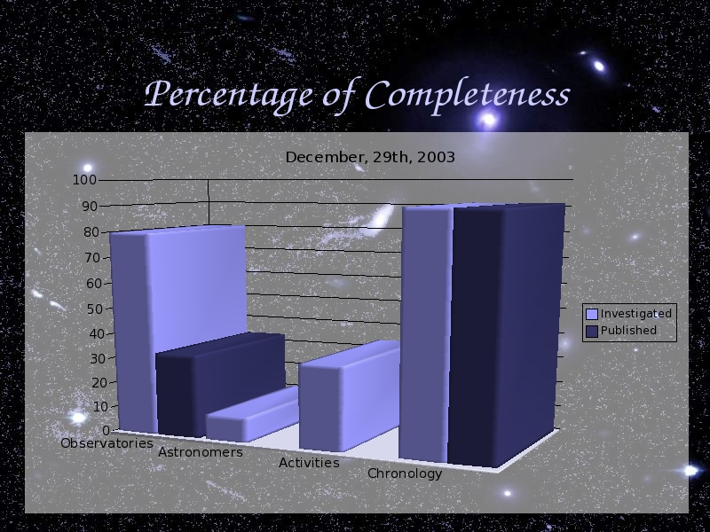

Voice Over:
How much of tracing Astronomical Histroy in Taiwan has done?
Here I can tell you, very little.
The light blue shows you the the percentage I have investigated, and the dark
blue shows you the percentage I have published in my website.
So what you can see from my website is very small part.
Hope from my talk, you can understand the whole concept of Astronomical History in Taiwan.
Thank you.